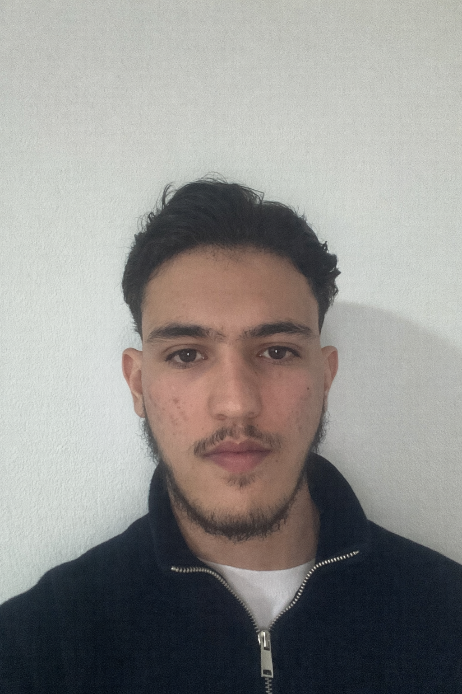

Audit de sécurité en laboratoire
Reconnaissance, exploitation, pivot réseau et documentation d'un scénario de pentest.
Explorer le projet →Bienvenue sur mon portfolio
Passionné par les réseaux, l'administration système et la cybersécurité offensive, je conçois et documente des projets concrets : architectures Cisco, automatisation, développement et audits techniques en environnement de laboratoire. Mon objectif est de progresser vers les métiers de la sécurité offensive, en m'appuyant sur une compréhension solide des infrastructures.

Reconnaissance, exploitation, pivot réseau et documentation d'un scénario de pentest.
Explorer le projet →Segmentation, routage, haute disponibilité et défense en profondeur sur équipements Cisco.
Voir les réalisations →Scanner réseau, application mobile Java et échange de données avec un back-end PHP.
Consulter les projets →